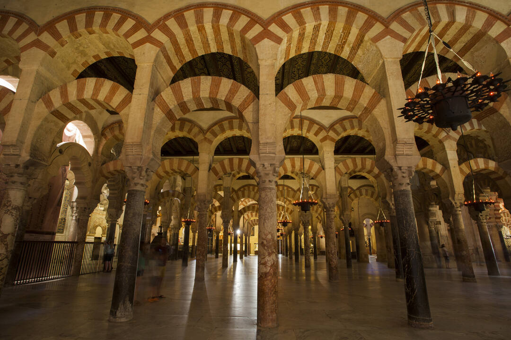
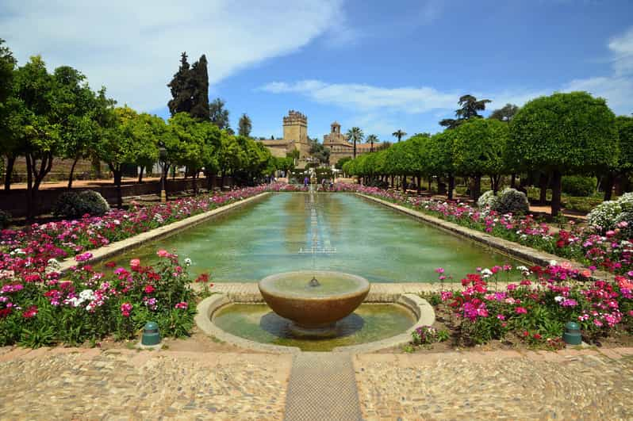
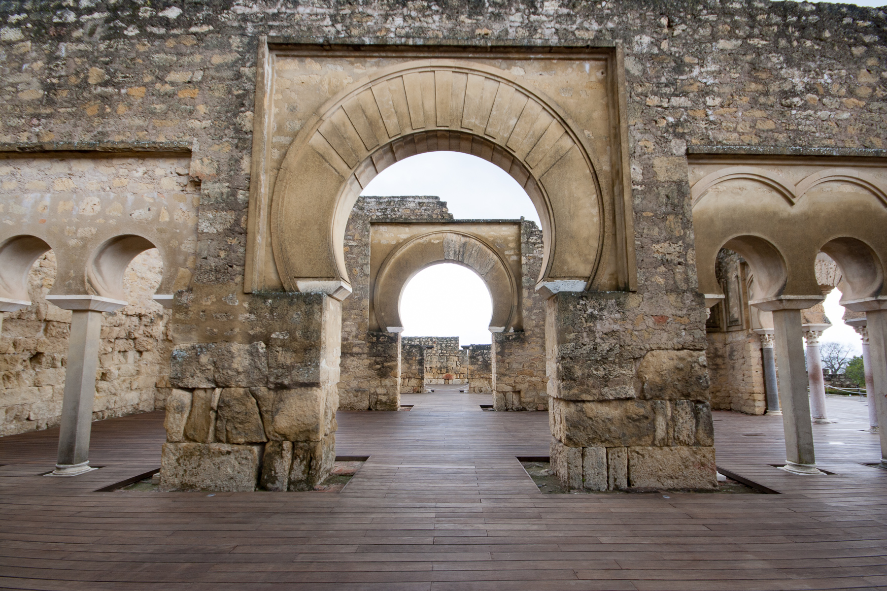
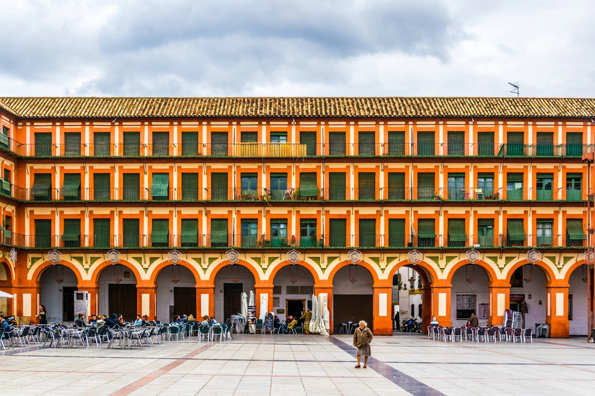
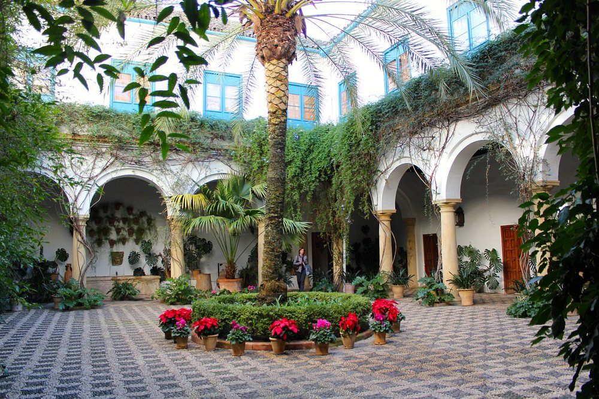

Architecture et Monuments

La Mosquée-Cathédrale
Chef-d'œuvre de l'architecture islamique, la Mosquée-Cathédrale de Cordoue est célèbre pour ses arches bicolores rouge et blanc et sa forêt de 856 colonnes. Construite au VIIIe siècle, elle représente l'apogée de l'art omeyyade en Espagne.
Horaires: Lun-Sam: 10h-19h, Dim: 8h30-11h30
Tarifs: Adulte: 11€, Enfant (10-14 ans): 6€

L'Alcázar des Rois Chrétiens
Forteresse royale avec de magnifiques jardins en terrasses, fontaines et bassins. Ses jardins arabes et ses tours défensives offrent un aperçu de l'architecture militaire et palatiale médiévale.
Horaires: Mar-Dim: 8h30-14h45
Tarifs: Adulte: 8€, Enfant: Gratuit


Le Pont Romain
Ce pont monumental du 1er siècle av. J.-C. traverse le Guadalquivir. Illuminé la nuit, il offre une vue spectaculaire sur la ville et la Mosquée-Cathédrale.
Horaires: Accès libre 24h/24
Tarifs: Gratuit

La place de la Corredera
La Plaza de la Corredera est une place rectangulaire unique en Andalousie, située au cœur de Cordoue. Inspirée des places castillanes, elle a servi de cadre à divers événements historiques, notamment des corridas et des exécutions publiques. Aujourd'hui, elle est entourée de cafés et de bars, offrant un lieu de détente prisé des habitants et des visiteurs.
Horaires: Ouvert 24h/24
Tarifs: Gratuit

Le palais de Viana
Le Palacio de Viana, situé à Cordoue, est un palais historique célèbre pour ses douze patios magnifiquement aménagés et son vaste jardin. Ce palais-musée offre aux visiteurs un aperçu de l'architecture aristocratique andalouse et de l'évolution des styles décoratifs sur plusieurs siècles.
Horaires: Mar-Dim: 8h30-14h45
Tarifs: Visite complète : 12€, Visite des patios : 8€, Enfant -10 ans : Gratuit Gratuité pour la visite des patios les mercredis de 14h à 15h